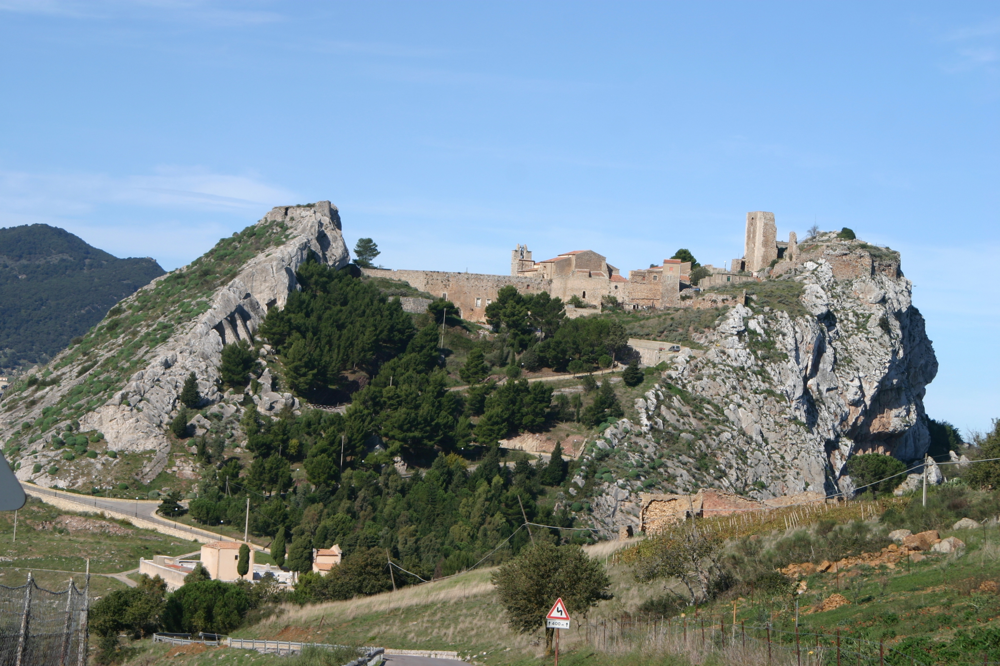

Rocca di Sclafani Bagni

ITALIANO - Successione di rocce bacinali del Dominio Imerese costituita stratigraficamente, dal basso verso l’alto, da: calcari dolomitici con liste e noduli di selce (Fm. Scillato), dolomie e brecce dolomitiche (Fm. Fanusi), argilliti silicee e radiolariti con brecce calcaree risedimentate (Fm. Crisanti), marne e argilliti prevalentemente rossastre (Fm. Caltavuturo). (Trias Sup. – Cretaceo sup./Oligocene)
ENGLISH - Succession of the Ocean basin rocks of the Imerese Dominion stratigraphically composed, from bottom to top, by: dolomitic limestones with flint strips and nodules (Fm. Scillato), dolostones and dolomitic breccias (Fm. Fanusi), siliceous argillite and radiolarites with calcareous breccias (Fm. Crisanti), marls and mudstones predominantly raddish. (Fm. Caltavuturo). (Trias Sup. – Cretaceous sup./Oligocene).